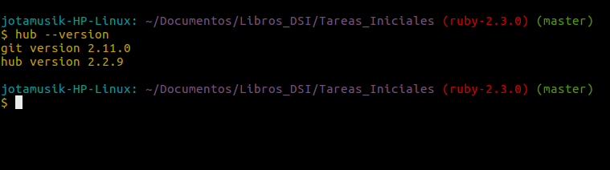

Capítulo 6: Hub
3.1 ¿Qué es Hub?
Hub es una utilidad que está diseñada para facilitar la tarea de trabajar con repositorios remotos, más en concreto, con GitHub permitiendonos acceder a nuestros repositorios con el nombre de usuario y el nombre del repositorio. De esta manera podremos acceder a un repositorio tal que:
hub clone <nombre-usu>/<nombre-repositorio>
3.2 ¿Cómo instalar Hub?
Se puede instalar esta utilidad de diversas maneras. A continuación se detallará la que nosotros consideramos la manera más sencilla de hacerlo. Lo primero que deberemos hacer es instalar el gestor de paquetes Homebrew:
sudo apt-get install linuxbrew-wrapper
Una vez hecho esto procederemos a instalar hub:
brew install hub

tras haber ejecutado este último comando ya tendremos instalado hub
podremos comprobarlo haciendo hub --version y nos saldrá algo como esto:

3.3 ¿Cómo utilizar Hub?
Hub es una expansión del comando git, por lo tanto podemos hacer uso de todos aquellas opciones que el comando git nos permitía. Básicamente podremos sustituir git por hubcuando estemos haciendo uso de la terminal.
Por ejemplo:
git commit
es equivalente a:
hub commit
Hub no solo nos permite acceder a nuestros repositorios de GitHub, sino que también nos permite crear un repositorio desde la terminal:
hub create <nombre-usuario>/<nombre-repo>
También podremos abrir un repositorio en el navegador desde la terminal. Para ello ejecutaremos:
hub browse <nombre-usuario>/<nombre-repo>
de esta manera se nos abrirá automaticamente nuestro navegador y nos aparecerá el repositorio en GitHub que le hemos especificado